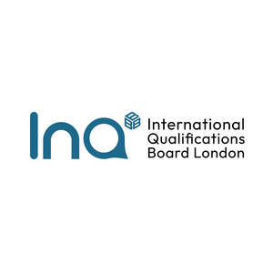

Trade Mark Journal No.2026/006 6 February 2026
UK00004283900 26 October 2025 (16,35,36,41,42)

- Class 16
- Instructional and teaching materials; Instructional and teaching material; Teaching materials; Teaching manuals; Printed teaching activity guides.
- Class 35
- Providing academic course administration services relating to online course registration.
- Class 36
- Credit assessment services; Financial management of membership schemes; Financial guarantee assessment services.
- Class 41
- Accreditation of professional competency; Accreditation [certifying] of educational achievement; Accreditation of educational services; Certification in relation to educational awards; Educational certification services, namely, providing training and educational examination; Awarding of educational certificates; Review courses for state examinations; Organisation of examinations [educational]; Academic examination services; Organisation of examinations to grade level of achievement; Issuing of educational awards; Development of educational courses and examinations; Educational assessment services; Education examination; Provision of educational examinations; Provision of educational examination facilities; Provision of educational examinations and tests; Educational examination services; Education; Vocational education; Health education; Pre-school education; Education and training; Academies [education]; Education and instruction; Services of schools [education]; Education services; University education services; Academy services (Education -); Education academy services; Academy education services; Education, teaching and training; Vocational education and training services; Religious education; Education (Religious -); Music education; Education and instruction services; Training and education services; Education and training services; Kindergarten services [education or entertainment]; Provision of education courses; Educational services for providing courses of education; Teaching of diet education; Career counseling [education]; Provision of training and education; Provision of education and training; Higher education services; Providing of education; Physical education; Education academy services for teaching languages; Entertainment, education and instruction services; Education information; Information (Education -); Education academy services for teaching art history; Computer education training; Medical education services; Education services relating to vocational training; Primary education services; Adult education services; Residential education courses; Computer education training services; Linguistic education and training services; Boarding school education; Education and training consultancy; Primary education services relating to literacy; Physical education instruction; Further education; Education academy services for teaching acting; Sports education services; Vocational education relating to home safety; Physical education services; Vocational education relating to self-defence; Musical education services; Physical health education; Legal education services; Technological education services; Providing continuing medical education courses; Online education services; Lingual education; Provision of physical education; Management of education services; Management education services; Education services relating to nutrition; Education services related to the arts; Education services relating to health; Education academy services for teaching construction drafting; Singing education; Dietary education services; Providing continuing dental education courses; Career counselling relating to education and training; Education courses relating to automation; Education services relating to religion; Vocational education in the field of mechanics; Educational services provided by institutes of higher education; Education and training in the field of music and entertainment; Club education services; Vocational education relating to personal safety; Education and training services in the field of occupational health and safety; Adult education services relating to medicine; Adult education services relating to finance; Research in the field of education; Providing continuing nursing education courses; Education and training in the field of occupational health and safety; Guidance (Vocational -) [education or training advice]; Vocational guidance [education or training advice]; Education information services; Education services for imparting language teaching methods; Education services relating to medicine; Sporting education services; Secondary school educational services; Education services relating to business training; Education, entertainment and sport services; Education courses relating to the travel industry; Educational and teaching services; Training or education services in the field of life coaching; Vocational education relating to first aid; Providing continuing legal education courses; Education services relating to the veterinary profession; Career counselling [training and education advice]; Adult education services relating to law; Education in the field of computing; Vocational education for young people; Blindness prevention education services; Education services relating to conservation; Provision of education courses relating to electronics; Education services relating to yoga; Adult education services relating to commerce; Education, entertainment and sports; Education services in the nature of courses at the university level; Education services relating to music; Education in the field of occupational health and safety; Career advisory services (education or training advice); Education in the field of computing science; Education services relating to commerce; Adult education services relating to banking; Provision of education courses relating to telecommunications; English language education services; Education services relating to industry; Education services relating to hygiene; Adult education services relating to pharmacy; Provision of facilities for education; Residential education courses relating to archery; Education in movement awareness; Educational services provided by institutes of further education; Provision of education courses relating to computers; Organization of education competitions; Adult education services relating to management; Education services relating to the cinema; Organization of competitions [education or entertainment]; Competitions (Organization of -) [education or entertainment]; Organization of competitions for education or entertainment; Education services relating to sports; Education services relating to fashion; Education services relating to banking; Education services relating to photography; Adult education services relating to auditing; Education services relating to pharmacy; Education services relating to conservation of the environment; Education and training in the field of business management; Educational and training services relating to healthcare; Providing education courses relating to the travel industry; Education and training in the field of automotive engineering; Education services relating to food technology; Foreign language education services; Teaching assessments for counteracting learning difficulties; Distance learning courses; Distance learning services; Organisation of courses using distance learning methods; Correspondence courses, distance learning; Organisation of courses using open learning methods; Organisation of courses using programmed learning methods; Conducting distance learning instruction at the college level; Language teaching; Teaching; Conducting distance learning instruction at the university level; Conducting distance learning instruction at the graduate level; Conducting distance learning instruction at the secondary level; Conducting distance learning instruction at the primary level; Distance learning services provided online; Teaching of beauty skills; Teaching of languages; Pre-school teaching; Educational services for teaching manual writing; Perceptual teaching services; Teaching of life saving techniques; Teaching of swimming; Providing of training, teaching and tuition; Educational services for the teaching of languages; Teaching in the field of remedial reading; Conducting of instructional, educational and training courses for young people and adults; Educational services for teaching keyboard writing; Language teaching services; Educational services relating to the teaching of french; Educational services for teaching transcription techniques; Teaching of needlework; Teaching of music; Rental of humanoid robots having communication and learning functions for entertaining people; Teaching services relating to pedagogy techniques; Teaching services for communication skills; Training for parents in parenting skills; Teaching of french to children through recreation; Education services for imparting data processing teaching methods; Educational instruction; Language training; Educational services for teaching acting; Educational services relating to the teaching of foreign languages; Organisation of teaching activities; Medical training and teaching; Self-awareness courses [instruction]; School services for the teaching of languages; Training of swimming teachers; Teaching of meditation practices; Arranging for students to participate in educational courses; Teaching and training in business, industry and information technology; Arrangement of training courses in teaching institutes; Developing educational manuals; Training in the development of computer memories; Vocational skills training; Services for teaching languages; Publication of educational teaching materials; Training of teachers; Instruction in the development of computers; Teaching by correspondence courses; Education and training relating to nature conservation and the environment; Providing courses of instruction for young people; Training and instruction; Courses (Training -) relating to research and development; Instruction in golfing skills; Conducting of educational courses in science; Courses (Training -) relating to science; Arranging for students to participate in educational activities; Providing courses of training for young people; Teaching of foreign languages; Providing online courses of instruction; Language instruction; Teaching services; Instruction in the writing of computer programs; Educational services for providing courses of instruction; Life coaching (training); Conducting of educational courses; Training in business skills; Providing computer assisted courses of instruction; Providing tutorial sessions in the field of mathematics; Educational and instruction services relating to arts and crafts; Educational courses relating to design; Arranging teaching programmes; Training relating to computer techniques; Providing courses of instruction; Adventure training for children; Providing computer-delivered educational testing and assessments; Educational testing; School services for the teaching of art; Courses for the development of consulting skills; Conducting training courses relating to nutrition online; Providing information about online education; Teaching of petcare; Providing of continuous training courses; Teaching academy services; Courses (Training -) relating to banking; Educational and instruction services relating to sport; Training in communication techniques; Conducting of educational courses relating to business; Educational and training services relating to games; Training relating to employment skills; Provision of training courses for young people in preparation for careers; Services for setting up data processing teaching programs; Computer assisted teaching services; Education services relating to communication skills.
- Class 42
- Certification of educational services; Certification services for the energy efficiency of buildings.
WORLD SAFETY FORUM LTD